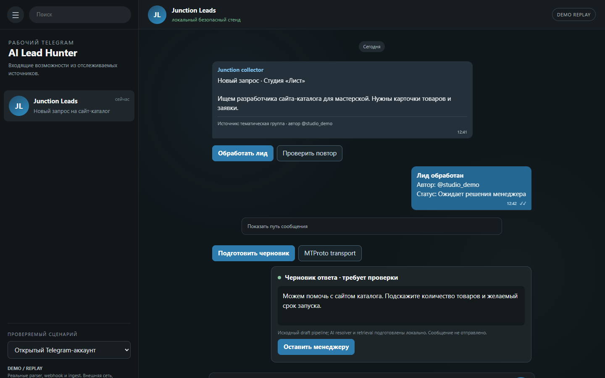
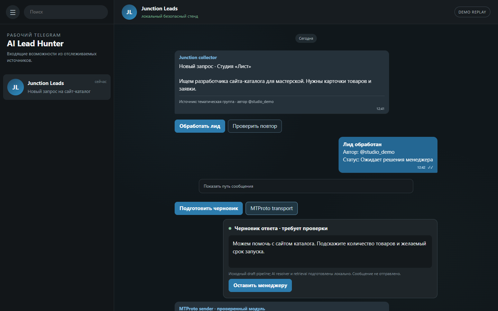

REAL / SANITIZED · топики лидов, источник, подготовленный ответ и действия оператора. Ники, имя, канал и ссылка заменены. Операторская Telegram-оболочка общая с поддержкой: поэтому в боковом списке виден соседний Support-топик. Активная переписка на этом кадре — именно найденный лид, не обращение в поддержку.
REAL / SANITIZED · топики лидов, источник, подготовленный ответ и действия оператора. Ники, имя, канал и ссылка заменены. Операторская Telegram-оболочка общая с поддержкой: поэтому в боковом списке виден соседний Support-топик. Активная переписка на этом кадре — именно найденный лид, не обращение в поддержку.LOCAL VERIFIED WALKTHROUGH

DEMO / REPLAY · draft pipeline
VERIFIED MODULE · MTProto transport boundaryORIGINAL: Junction parser, collector webhook, ingest, Telegram topics, draft formatter и связанный MTProto transport. REAL EVIDENCE: переданный пользователем операторский Telegram screenshot. DEMO: локальные storage/topic/AI adapters; production-отправка отключена.